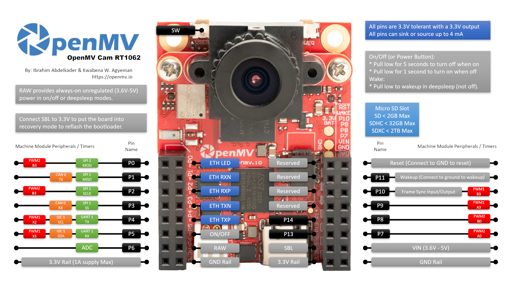

OpenMV Cam RT1062¶
OpenMV Cam RT1062 este o placă de viziune artificială cu consum redus, construită în jurul NXP i.MX RT1062 (Cortex‑M7 @ 600 MHz). Placa combină rețea USB‑C de mare viteză, Wi‑Fi/Bluetooth și Ethernet 10/100 cu un senzor OV5640 de 5MP pe un suport detașabil. Camera consumă doar ~30 µA dintr‑o baterie LiPo în repaus profund (deep sleep), ceea ce o face foarte potrivită pentru proiecte alimentate de la baterie.

Pentru fișa tehnică completă, fotografii și dimensiuni, consultați pagina de produs OpenMV Cam RT1062.
Caracteristici principale¶
NXP i.MX RT1062 Cortex‑M7 la 600 MHz.
32 MB SDRAM extern (16 biți @ 160 MHz, 320 MB/s) plus 1 MB SRAM intern și 16 MB memorie flash QSPI (133 MHz 4 biți SDR, citire 66 MB/s); 4 KB EEPROM pe R6+.
Senzor OV5640 de 5MP cu rolling‑shutter.
IMU integrat (accelerometru pe 3 axe pe 12 biți, ±2/4/8 g).
USB‑C de mare viteză (480 Mb/s, limită de curent 1,5 A), Ethernet 10/100 Mb/s (compatibil PoE prin shield), Wi‑Fi a/b/g/n + Bluetooth 5.1 (antenă pe cip sau opțiune U.FL).
Soclu microSD — SD până la 2 GB, SDHC până la 32 GB, SDXC până la 2 TB.
Încărcător LiPo (500 mA pe R6+, 100 mA pe R4/R5), RTC cu pad‑uri pentru baterie de rezervă. În repaus profund consumă ~30 µA de la baterie.
14 pini de I/O, toți cu ieșire 3,3 V / tolerant la 3,3 V, 4 mA per pin, capabili de întrerupere.
LED RGB de utilizator, buton SW de utilizator, buton hardware de alimentare (mașină de stări repaus profund / trezire) și un LED de stare separat pentru încărcare / USB / alimentare VIN.
Atenționare
Pinii de I/O ai RT1062 nu sunt toleranți la 5 V. Nu conectați dispozitivul direct la un MCU de 5 V precum Arduino Mega. Alimentați placa numai prin VIN.
Configurația pinilor (pinout)¶
{kind=link}

Referință pini¶
Nume pin |
Funcție |
|---|---|
P0 |
SPI1 MOSI / PWM2 B3 |
P1 |
SPI1 MISO / CAN0 TX |
P2 |
SPI1 SCLK / PWM2 B3 |
P3 |
SPI1 SS / CAN0 RX |
P4 |
I2C1 SCL / UART1 TX / PWM1 X2 |
P5 |
I2C1 SDA / UART1 RX / PWM1 X3 |
P6 |
ADC |
P7 |
PWM2 A0 |
P8 |
PWM2 B0 |
P9 |
PWM1 A3 |
P10 |
PWM1 B3 / I/O sincronizare cadru |
P11 |
trezire (activ pe nivel jos, conectați la GND pentru trezire) |
P12 |
RESET — trageți la GND pentru a reseta placa (nu este un GPIO) |
P13 |
I/O digital |
P14 |
I/O digital |
ON/OFF |
pad de pe header care reproduce butonul hardware de alimentare (activ pe nivel jos) |
SW |
buton de utilizator (activ pe nivel jos) |
ST |
jos la alimentare VIN, sus la alimentare USB |
CHG |
activ pe nivel jos; jos cât timp o baterie LiPo atașată se încarcă |
PG |
activ pe nivel jos; jos când este prezentă alimentarea VIN sau USB |
LED_RED |
canalul roșu al LED‑ului RGB (activ pe nivel jos) |
LED_GREEN |
canalul verde al LED‑ului RGB (activ pe nivel jos) |
LED_BLUE |
canalul albastru al LED‑ului RGB (activ pe nivel jos) |
Notă
Linia de sincronizare a cadrelor P10 este o magistrală partajată. Este cablată simultan la MCU, la pinul de declanșare / expunere al senzorului camerei și la header‑ul de utilizator. Direcția este definită de aplicație — MCU‑ul, senzorul sau un semnal extern o pot conduce, în funcție de modul în care este configurat senzorul. Asigurați‑vă că un singur driver este activ la un moment dat.
Notă
ON/OFF și P11 sunt raportate la rail‑ul RAW mereu pornit (nu la rail‑ul comutat de 3,3 V), astfel încât rămân funcționale în timp ce restul plăcii este în repaus profund / mod cu consum redus. Ambele intrări sunt active pe nivel jos.
Acești pini trec prin convertoare de nivel (level shifter) pentru a putea funcționa pe rail‑ul RAW. Dacă aveți neapărat nevoie de comportament GPIO direct la 3,3 V pe ON/OFF sau P11 (de exemplu pentru a‑i conduce de la un MCU de 3,3 V fără a trece prin convertor), placa expune pad‑uri de pull‑up și jumper de 0 ohmi care permit ocolirea convertorului. Aceasta este o modificare hardware avansată — majoritatea utilizatorilor ar trebui să o lase neatinsă.
Notă
P13 și P14 sunt GPIO obișnuiți în mod implicit, fără funcție specială. Pad‑urile pot fi, opțional, redirecționate către alte semnale prin reflow‑ul punților de lipire cu rezistor de 0 ohmi de pe spatele plăcii:
P13 ↔ stare CHG / JTAG TRSTB
P14 ↔ stare ST / JTAG TDI
Majoritatea utilizatorilor nu vor atinge aceste jumpere — lăsați‑le la valoarea implicită GPIO, cu excepția cazului în care aveți nevoie în mod specific de citirea managementului alimentării sau de JTAG.
Pini de alimentare¶
3.3V — rail reglat de 3,3 V. Doar ieșire pe RT1062 — nu alimentați acest pin de la o sursă externă. Până la 1 A disponibil pentru shield‑uri.
VIN — intrare de 5 V. Alimentează placa și încărcătorul LiPo integrat.
RAW — intrare/ieșire, mereu pornit (3,6 V – 5 V). Transportă oricare sursă este activă (VIN, USB sau bateria atașată) și poate fi folosit și ca intrare. Trebuie să conduceți RAW printr‑o diodă în serie atunci când îi furnizați alimentare — altfel curentul va circula înapoi în VIN/USB și va deteriora sursa sau protecția integrată.
GND — masă comună.
Notă
Cipul integrat de management al alimentării alege automat dintre USB sau VIN pe cel cu tensiunea mai mare pentru a alimenta placa și încărcătorul de baterie. Dacă este atașată o baterie LiPo, aceasta se încarcă din marja rămasă, iar controlerul comută pe baterie pentru a menține placa în funcțiune dacă VIN/USB scad sau sunt deconectate.
Notă
Spatele plăcii are pad‑uri de lipire pentru o baterie externă de rezervă RTC de 3,3 V. Conectarea unei baterii tip nasture la aceste pad‑uri menține RTC‑ul în funcțiune cât timp restul plăcii este nealimentat.
Sfat
Folosiți estimatorul duratei de viață a bateriei pentru a modela cât timp va funcționa RT1062 cu o baterie, pentru un anumit ciclu de lucru activ / repaus profund.
Pini Ethernet¶
RT1062 expune perechile MDI ale PHY‑ului Ethernet 10/100 Mb/s pe pad‑uri dedicate, lângă header‑ul GPIO. Pinii MDI nu pot fi cablați în siguranță direct la un RJ45 — între PHY și cablu sunt necesare componente magnetice Ethernet (un transformator de izolare, fie integrat într‑un magjack, fie pe shield). Shield‑ul PoE OpenMV le include; dacă vă construiți propriul mufaj, folosiți un RJ45 cu componente magnetice integrate sau un transformator extern.
ETH_LED — LED de legătură/activitate. Activ pe nivel jos când legătura este activă; clipește la trafic.
ETH_TXP / ETH_TXN — perechea de transmisie.
ETH_RXP / ETH_RXN — perechea de recepție.
Notă
Header‑ul expune și patru pad‑uri marcate prin serigrafie Reserved. Acestea sunt compatibile ca amprentă cu perechile Ethernet gigabit de pe OpenMV N6 (DC P/N și DD P/N), astfel încât același shield Ethernet / PoE să poată fi conectat la oricare dintre plăci. PHY‑ul RT1062 funcționează doar la 10/100 Mb/s, așa că aceste patru pad‑uri nu au conectivitate electrică — lăsați‑le neconectate.
Pini de recuperare și depanare¶
RESET — trageți la GND pentru a reseta placa. Eliberarea lui permite MCU‑ului să pornească normal.
SBL — trageți la 3,3 V în timp ce alimentați placa pentru a intra în modul bootloader ROM (Serial Boot Loader). OpenMV IDE folosește acest mod pentru a reprograma bootloaderul integrat.
Este montat un header dedicat ARM SWD/JTAG cu 10 pini, compatibil cu adaptoarele ST‑LINK și SEGGER J‑Link.
Notă
RT1062 expune implicit doar depanare SWD prin acest conector. JTAG complet nu este disponibil din fabrică.
Periferice integrate¶
LED‑uri¶
RT1062 are două LED‑uri RGB:
LED RGB de utilizator — controlabil prin software, expus ca
LED_RED,LED_GREENșiLED_BLUEfrom machine import LED LED("LED_RED").on() LED("LED_GREEN").on() LED("LED_BLUE").on()
LED de alimentare — condus direct de hardware‑ul de management al alimentării integrat, fără control software. Folosiți‑l pentru a vedea dintr‑o privire ce face sursa.
În timpul funcționării:
Canal
Semnificație
Albastru
VIN alimentează placa (stins pe USB)
Verde
alimentare USB sau VIN prezentă
Roșu
se încarcă o baterie LiPo atașată
În repaus profund, toate canalele sunt stinse cu excepția celui Roșu, care rămâne aprins cât timp se încarcă o baterie LiPo.
Pini de stare a alimentării¶
Trei intrări de stare active pe nivel jos de la cipul integrat de management al alimentării:
PG — jos când este prezentă alimentarea VIN sau USB. Întotdeauna conectat.
ST — jos când placa funcționează pe VIN, sus când funcționează pe alimentare USB. Neconectat în mod implicit.
CHG — jos cât timp o baterie LiPo atașată se încarcă. Neconectat în mod implicit.
from machine import Pin
power_ok = not Pin("PG", Pin.IN).value()
Senzorul camerei¶
OV5640 este controlat prin modulul csi — senzori de cameră
import csi
cam = csi.CSI()
cam.reset()
cam.pixformat(csi.RGB565)
cam.framesize(csi.QVGA)
cam.snapshot(time=2000) # let auto‑exposure settle
while True:
img = cam.snapshot()
OV5640 are un compresor JPEG integrat. Setați csi.CSI.pixformat la csi.JPEG și senzorul livrează cadre comprimate direct către cameră prin magistrala camerei, ceea ce face practice capturile la rezoluție înaltă: csi.HD (1280×720), csi.FHD (1920×1080) și formatul complet de 5MP csi.WQXGA2 (2592×1944) sunt toate transmise ca JPEG. Reglați compresia cu csi.CSI.quality (0-100, mai mare = cadre mai mari, mai multe detalii):
{kind=link}
cam.pixformat(csi.JPEG)
cam.framesize(csi.WQXGA2)
cam.quality(90)
Senzorul este montat pe un modul detașabil — înlocuiți‑l cu oricare dintre celelalte module de cameră OpenMV (global shutter, termic, rezoluție mai mare etc.) fără a schimba restul plăcii.
Învățare automată¶
ml — Învățare automată rulează modele TFLite cuantizate pe Cortex‑M7 cu kernel‑uri CMSIS‑NN — suficient de rapid pentru detectoare compacte la câteva cadre pe secundă. Modelele de pe sistemul de fișiere read‑only /rom se încarcă direct din memoria flash, fără copiere în RAM. Iată un detector BlazeFace de 128×128 care suprapune fața detectată și cele șase puncte de reper pe fiecare cadru:
import csi
import time
import ml
from ml.postprocessing.mediapipe import BlazeFace
# Initialize the sensor.
csi0 = csi.CSI()
csi0.reset()
csi0.pixformat(csi.RGB565)
csi0.framesize(csi.VGA)
csi0.window((400, 400))
# Load built-in face detection model
model = ml.Model("/rom/blazeface_front_128.tflite", postprocess=BlazeFace(threshold=0.4))
print(model)
clock = time.clock()
while True:
clock.tick()
img = csi0.snapshot()
# faces is a list of ((x, y, w, h), score, keypoints) tuples
for r, score, keypoints in model.predict([img]):
ml.utils.draw_predictions(img, [r], ("face",), ((0, 0, 255),), format=None)
# keypoints is a ndarray of shape (6, 2)
# 0 - right eye (x, y)
# 1 - left eye (x, y)
# 2 - nose (x, y)
# 3 - mouth (x, y)
# 4 - right ear (x, y)
# 5 - left ear (x, y)
ml.utils.draw_keypoints(img, keypoints, color=(255, 0, 0))
print(clock.fps(), "fps")
IMU¶
Firmware‑ul RT1062 nu conectează accelerometrul integrat la modulul imu — senzor imu. Comunicați direct cu el prin magistrala I²C internă — cipul se află la adresa 0x15 și furnizează trei canale de accelerație cu semn pe 12 biți, plus un octet de temperatură pe 8 biți, începând de la registrul 0x03
import machine
import time
ADDR = 0x15
DATA_REG = 0x03
LSB_PER_G = 1024.0 # ±2 g range
def s12(hi, lo):
v = ((hi << 8) | lo) >> 4
return v - 0x1000 if v & 0x800 else v
bus = machine.I2C(2)
print("Devices on I²C2:", bus.scan())
while True:
d = bus.readfrom_mem(ADDR, DATA_REG, 7)
x = s12(d[0], d[1]) / LSB_PER_G
y = s12(d[2], d[3]) / LSB_PER_G
z = s12(d[4], d[5]) / LSB_PER_G
temp_c = d[6] * 0.586 + 25.0
print("x=%+.2fg y=%+.2fg z=%+.2fg T=%.1f°C" % (x, y, z, temp_c))
time.sleep_ms(100)
EEPROM¶
Plăcile R6 și ulterioare includ un EEPROM I²C generic de 4 KB pe aceeași magistrală internă ca accelerometrul. (Reviziile anterioare nu au unul — apelarea acestor fragmente pe R4/R5 va expira la un ack I²C lipsă.) Folosiți API‑ul standard machine.I2C readfrom_mem / writeto_mem cu o adresă de memorie pe 16 biți:
import machine
import time
EEPROM_ADDR = 0x50 # default address
PAGE_SIZE = 32 # bytes per page (both read and write)
EEPROM_SIZE = 4096
bus = machine.I2C(2)
# Dump the entire 4 KB one page at a time
data = bytearray()
for offset in range(0, EEPROM_SIZE, PAGE_SIZE):
data += bus.readfrom_mem(EEPROM_ADDR, offset, PAGE_SIZE, addrsize=16)
print(len(data), "bytes")
# Write a small payload back at offset 0 (fits in one page)
bus.writeto_mem(EEPROM_ADDR, 0, b"hello, world", addrsize=16)
time.sleep_ms(10) # ~5 ms write cycle after each page
# Read it back
print(bus.readfrom_mem(EEPROM_ADDR, 0, 12, addrsize=16))
Atât citirile, cât și scrierile trebuie să rămână în limita unei pagini de 32 de octeți. Împărțiți orice transfer mai mare într‑un apel per pagină și adăugați întârzierea de ciclu de scriere de ~5 ms între scrierile consecutive.
Wi‑Fi¶
Modulul integrat din familia CYW43 este expus prin network — configurarea rețelei ca interfață de stație. După conectare, ipconfig("addr4") returnează perechea (ip, netmask)
import network, time
wlan = network.WLAN(network.STA_IF)
wlan.active(True)
wlan.connect("ssid", "password")
while not wlan.isconnected():
time.sleep(1)
print("Wi‑Fi IP:", wlan.ipconfig("addr4")[0])
Bluetooth¶
Același modul wireless expune și Bluetooth 5.1. Folosiți aioble — BLE asincron pentru BLE prietenos cu asyncio — de exemplu, anunțați‑vă ca periferic și așteptați conectarea unui dispozitiv central:
import asyncio
import aioble
async def run():
while True:
conn = await aioble.advertise(250_000, name="OpenMV-RT1062")
print("Connected:", conn.device)
await conn.disconnected()
asyncio.run(run())
Ethernet¶
Când un RJ45 (cu componente magnetice) este conectat la pad‑urile MDI, PHY‑ul 10/100 apare ca interfață LAN. DHCP rulează automat de îndată ce legătura devine activă:
import network, time
lan = network.LAN()
lan.active(True)
while not lan.isconnected():
time.sleep(1)
print("Ethernet IP:", lan.ipconfig("addr4")[0])
card microSD¶
Când un card este introdus, este montat automat la /sdcard și poate fi folosit prin sistemul de fișiere obișnuit:
import os
for entry in os.listdir("/sdcard"):
print(entry)
Referință magistrale¶
GPIO¶
Folosiți machine.Pin pentru a citi sau a conduce oricare dintre pinii marcați prin serigrafie. Ieșirile sunt CMOS de 3,3 V și pot absorbi/furniza până la 4 mA per pin.
from machine import Pin
out = Pin("P0", Pin.OUT)
out.on()
out.off()
out.value(1)
inp = Pin("P1", Pin.IN, Pin.PULL_UP)
print(inp.value())
Orice pin de intrare poate, de asemenea, declanșa o întrerupere la tranzițiile de front:
def handler(pin):
print("triggered:", pin)
Pin("P1", Pin.IN, Pin.PULL_UP).irq(
handler, Pin.IRQ_FALLING | Pin.IRQ_RISING,
)
UART¶
Magistrală |
TX |
RX |
|---|---|---|
UART1 |
P4 |
P5 |
from machine import UART
uart = UART(1, baudrate=115200)
uart.write("hello")
uart.read(5)
I²C¶
Magistrală |
SCL |
SDA |
|---|---|---|
I2C1 |
P4 |
P5 |
from machine import I2C
i2c = I2C(1, freq=400_000)
i2c.scan()
i2c.writeto(0x76, b"hi")
Același hardware poate fi folosit și în mod țintă (slave) prin machine.I2CTarget pentru a expune o regiune de memorie unui alt controler I²C:
from machine import I2CTarget
buf = bytearray(32)
target = I2CTarget(1, addr=0x42, mem=buf)
SPI¶
Magistrală |
MOSI |
MISO |
SCK |
CS |
|---|---|---|---|---|
SPI1 |
P0 |
P1 |
P2 |
P3 |
from machine import SPI
from machine import Pin
spi = SPI(1, baudrate=10_000_000)
cs = Pin("P3", Pin.OUT, value=1) # CS is not driven by the SPI peripheral
cs.value(0)
spi.write(b"hello")
cs.value(1)
CAN¶
Magistrală |
TX |
RX |
|---|---|---|
CAN1 |
P1 |
P3 |
Notă
CAN nu este încă acceptat pe această placă în firmware‑ul v5.0.0.
from machine import CAN
can = CAN(1, 500_000)
can.set_filters(None)
can.send(0x123, b"\xDE\xAD\xBE\xEF")
print(can.recv())
ADC¶
Singurul pin ADC de utilizator este P6, care este la scară completă la ~3,3 V:
from machine import ADC
import time
adc = ADC("P6")
while True:
voltage = adc.read_u16() * 3.3 / 65535
print(voltage)
time.sleep_ms(100)
PWM¶
Pin |
Canal FlexPWM |
|---|---|
P0 |
PWM2 B3 |
P2 |
PWM2 B3 |
P4 |
PWM1 X2 |
P5 |
PWM1 X3 |
P7 |
PWM2 A0 |
P8 |
PWM2 B0 |
P9 |
PWM1 A3 |
P10 |
PWM1 B3 |
Conduceți oricare dintre ei prin machine.PWM
from machine import Pin, PWM
pwm = PWM(Pin("P9"), freq=1_000, duty_u16=32768)
Magistrale software bit‑banged¶
machine.SoftI2C și machine.SoftSPI funcționează pe orice GPIO dacă aveți nevoie de o magistrală suplimentară.
Senzor termic (extern plăcii)¶
Firmware‑ul include driverul fir — driver pentru senzori termici (fir == far infrared) pentru camere termice cablate extern:
MLX90621 — matrice IR 16 × 4
MLX90640 — matrice IR 32 × 24
MLX90641 — matrice IR 16 × 12
AMG8833 — matrice IR 8 × 8
Cablați modulul la magistrala I²C a plăcii și citiți cadre cu fir.init() + fir.snapshot()
import time
import image
import fir
fir.init() # auto‑detects the sensor
clock = time.clock()
while True:
clock.tick()
try:
img = fir.snapshot(x_scale=5, y_scale=5,
color_palette=image.PALETTE_IRONBOW,
hint=image.BICUBIC,
copy_to_fb=True)
except OSError:
continue
print(clock.fps())
Driverul fir comunică cu senzorul doar prin I²C 4 — cablați modulul la P4 (SCL) și P5 (SDA).
Temporizare¶
time¶
Modulul time acoperă întârzierile blocante, tick‑urile monotone și măsurarea timpului scurs:
import time
time.sleep(1) # seconds
time.sleep_ms(500)
time.sleep_us(10)
start = time.ticks_ms()
# ...do work...
elapsed = time.ticks_diff(time.ticks_ms(), start)
Temporizatoare virtuale¶
machine.Timer programează funcții de retroapelare (callback) periodice sau unice fără a consuma un slot de temporizator hardware. Transmiteți -1 ca id pentru a folosi un temporizator virtual (software):
from machine import Timer
one_shot = Timer(-1)
one_shot.init(period=5_000, mode=Timer.ONE_SHOT,
callback=lambda t: print("once"))
periodic = Timer(-1)
periodic.init(period=2_000, mode=Timer.PERIODIC,
callback=lambda t: print("tick"))
Valorile perioadei sunt în milisecunde. Apelați deinit() pentru a opri și a elibera slotul.
Ceas în timp real¶
machine.RTC păstrează ora calendaristică între resetări și (cu bateria opțională de rezervă de 3,3 V cablată la pad‑urile din spate, vezi Pini de alimentare) chiar și la pierderea totală a alimentării:
from machine import RTC
rtc = RTC()
rtc.datetime((2026, 4, 30, 4, 12, 0, 0, 0)) # Y, M, D, weekday, h, m, s, subsec
print(rtc.datetime())
RTC‑ul rulează și în repaus profund, așa că îl puteți folosi ca sursă de trezire pentru machine.deepsleep().
Watchdog¶
machine.WDT resetează placa dacă aplicația se blochează. Odată pornit, nu poate fi oprit sau reconfigurat — alimentați‑l periodic în interiorul buclei principale:
from machine import WDT
wdt = WDT(timeout=5_000) # 5 second window
while True:
# ...do work...
wdt.feed()
Informații despre pornire și execuție¶
Fereastra bootloaderului USB¶
La fiecare pornire, camera rulează un bootloader scurt (câteva secunde) care permite OpenMV IDE să actualizeze firmware‑ul fără ca utilizatorul să fie nevoit să intre în modul DFU. După expirarea ferestrei, bootloaderul predă controlul către boot.py și apoi main.py.
Un script în execuție poate reintra în bootloader la cerere apelând machine.bootloader()
import machine
machine.bootloader()
Sistemul de fișiere și ordinea de pornire¶
Firmware‑ul RT1062 montează la pornire până la trei sisteme de fișiere:
Memoria flash internă — întotdeauna montată la
/flash. Conține implicitmain.pyșiREADME.txt; creată la prima pornire.Card microSD — dacă este introdus un card, acesta este montat la
/sdcard.ROMFS — sistem de fișiere read‑only, mapat în memorie, la
/rom, folosit pentru a livra resurse mari de date (de exemplu modele AI) care beneficiază de acces zero‑copy. Montat automat de MicroPython la pornire, înainte de rularea oricărui cod Python de utilizator.
După montare, directorul de lucru este setat la /sdcard când cardul este prezent, altfel la /flash. Interpretorul rulează apoi scripturile din acel director:
boot.pyeste executat la fiecare soft reset (pornire la rece,Ctrl‑Ddin REPL sau ori de câte ori scriptul în execuție returnează).main.pyeste executat doar la pornirea la rece, imediat dupăboot.py. Soft reset‑urile ulterioare reexecutăboot.py, dar trec direct la REPL — pentru a reexecutamain.pytrebuie să resetați complet placa.
Plasarea unui fișier boot.py sau main.py pe cardul SD suprascrie copia din memoria flash fără a o atinge — ambele fișiere sunt căutate în directorul de pornire (/sdcard când cardul este montat, altfel /flash).
Fișierul implicit main.py livrat pe o placă proaspăt programată doar clipește canalul albastru al LED‑ului RGB de utilizator ca puls de funcționare (două impulsuri scurte, o pauză scurtă), astfel încât să puteți vedea că firmware‑ul a pornit corect, fără niciun host atașat.
sys.path este extins pentru a include toate cele trei sisteme de fișiere și subdirectoarele lor lib/, astfel încât modulele importabile pot locui în /flash/lib, /sdcard/lib sau /rom/lib.
Pentru a forța sistemul să ignore un card SD introdus (de exemplu pentru a rula main.py din flash chiar și cu un card prezent), creați un fișier gol numit SKIPSD în rădăcina /flash.
Când este conectat prin USB, sistemul de fișiere de pornire (/sdcard dacă este prezent un card, altfel /flash) este enumerat și ca unitate de stocare în masă USB pe host, permițându‑vă să editați direct boot.py, main.py și orice alte fișiere. Ejectați unitatea înainte de a reseta camera, pentru ca host‑ul să golească scrierile din cache.
Notă
Deoarece sistemul de operare tratează unitatea ca un dispozitiv bloc pasiv, fișierele create sau modificate de codul care rulează pe OpenMV Cam nu vor apărea până când host‑ul nu remontează unitatea. Dacă atât sistemul de operare, cât și OpenMV Cam scriu pe același sistem de fișiere în același timp, sistemul de operare va câștiga și va suprascrie modificările făcute de cameră. Folosiți cardul SD pentru orice date pe care scriptul le scrie înapoi și remontați înainte de a citi acele fișiere de pe host.
Notă
Canalul roșu al LED‑ului RGB de utilizator se poate aprinde scurt în timp ce host‑ul citește din sau scrie pe unitatea de stocare în masă USB — acesta este un indicator de activitate condus de firmware, nu o defecțiune.
Dimensiuni de stocare¶
RT1062 este livrat cu:
/flash— sistem de fișiere FAT de 4 MB, citire/scriere./rom— ROMFS read‑only de 8 MB mapat în memorie, folosit pentru a livra scripturi și modele ML care beneficiază de acces zero‑copy prin mmap./sdcard— dimensiunea completă a oricărui card microSD introdus (când este prezent), citire/scriere.
Indicator de hard fault¶
Dacă LED‑ul RGB de utilizator parcurge rapid toate culorile — suficient de repede încât tinde să arate ca un LED alb pâlpâind mai degrabă decât ca nuanțe distincte — firmware‑ul a întâlnit un hard fault nerecuperabil. Reprogramați firmware‑ul pentru a recupera; dacă reprogramarea nu ajută, este posibil ca placa să fie deteriorată fizic.
Biblioteci software¶
Consultați indexul bibliotecii pentru lista completă de module — inclusiv care dintre ele sunt unice pentru build‑ul RT1062.